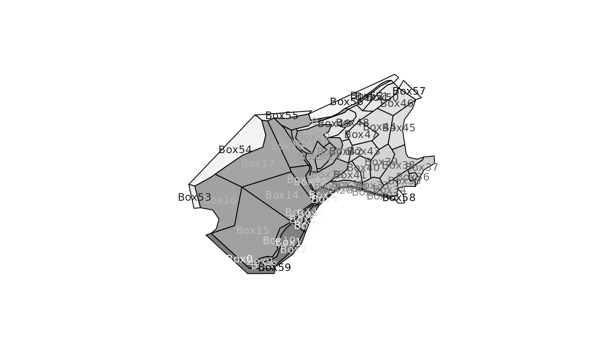
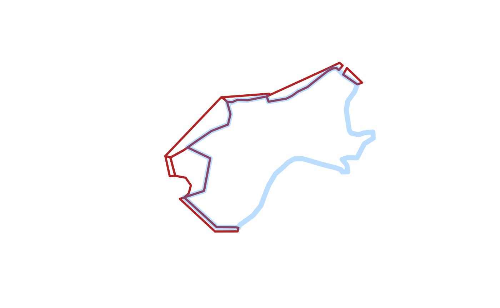
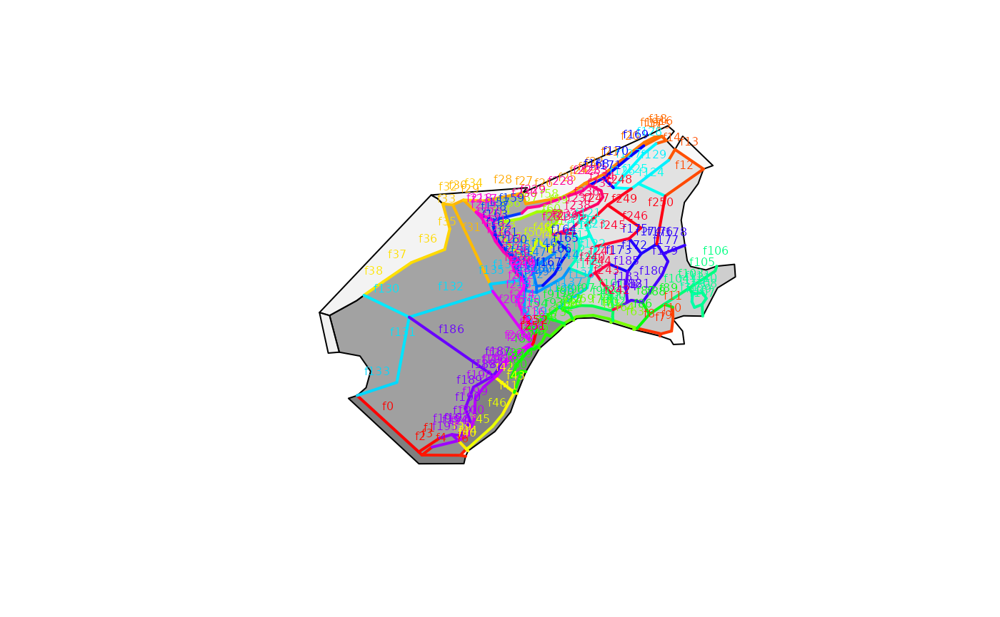
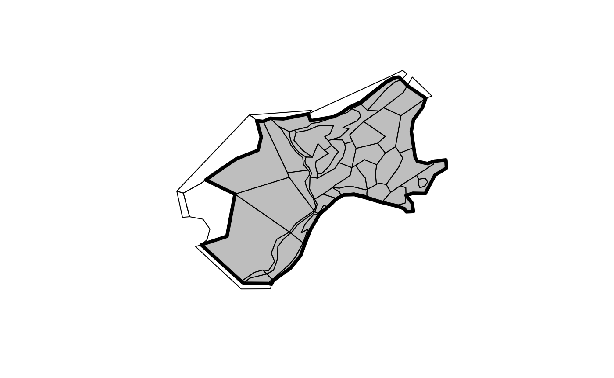

BGM as Spatial objects
Michael D. Sumner
2026-11-06
Source:vignettes/BGM_Spatial.Rmd
BGM_Spatial.RmdRead in an example .bgm file with bgmfile, and plot it
as box-polygons.
library(rbgm)
library(bgmfiles) ## example files
## example data set in package
fname <- bgmfiles(pattern = "Nordic")[1L]
bgm <- bgmfile(fname)
plot(boxSpatial(bgm), col = grey(seq(0, 1, length = nrow(bgm$boxes))))The function bgmfile returns a generic list structure of
tables, which currently includes the following. More on these later.
print(names(bgm))
#> [1] "vertices" "facesXverts" "faces" "facesXboxes"
#> [5] "boxesXverts" "boxes" "boundaryvertices" "extra"There are functions for converting from the raw .bgm data structures
to Spatial objects, as defined in the sp
package. (Spatial objects are formal GIS-like data that store a table of
attribute data against a set of matching polygons, lines or points.)
-
boxSpatialconverts to aSpatialPolygonsDataFrame, with a table of attributes relevant to the boxes -
faceSpatialconverts to aSpatialLinesDataFrame, with attributes for the faces (straight line edges that define box boundaries) -
nodeSpatialconverts to a `SpatialPointsDataFrame, with attributes for the unique vertices in the model -
pointSpatialconverts to aSpatialPointsDataFrame, with attributes for all instances of the vertices in the model (faces share vertices) -
boundarySpatialconverts just the boundary path toSpatialPolygonsDataFrame
From these conversions we can export to GIS formats such as GeoPackage.
It’s important to note that the Spatial objects cannot store the full topological and attribute information present in the .bgm, so these are convenience converters that are one-way. We can generate .bgm from these objects, but it cannot be stored in just one Spatial object.
These converter functions provide fully-functional objects with complete coordinate system metadata, that we can subset, interrogate and plot.
(spdf <- boxSpatial(bgm))
#> class : SpatialPolygonsDataFrame
#> features : 60
#> extent : -1411988, 1849768, 3463169, 6117110 (xmin, xmax, ymin, ymax)
#> crs : +proj=aea +lat_1=43 +lat_2=62 +lat_0=30 +lon_0=10 +x_0=0 +y_0=0 +ellps=intl +units=m +no_defs
#> variables : 11
#> names : label, nconn, botz, area, vertmix, horizmix, insideX, insideY, .bx0, boundary, box_id
#> min values : Box0, 0, -3255, 1317077441.6413, 1e-04, 1, -1334344.11869758, 3543086.16022841, 0, 0, 0
#> max values : Box9, 21, 0, 525138111862.757, 0.001, 2, 1668909.2842076, 5889207.4351272, 59, 1, 59
(sldf <- faceSpatial(bgm))
#> class : SpatialLinesDataFrame
#> features : 253
#> extent : -1116549, 1703682, 3521699, 6035115 (xmin, xmax, ymin, ymax)
#> crs : +proj=aea +lat_1=43 +lat_2=62 +lat_0=30 +lon_0=10 +x_0=0 +y_0=0 +ellps=intl +units=m +no_defs
#> variables : 7
#> names : cosine, sine, left, right, length, .fx0, label
#> min values : -0.996668837654093, -0.99648270316708, 0, 1, 711.256615760743, 0, face0
#> max values : 0.999976969046993, 0.999666398127426, 59, 59, 803970.852887957, 252, face99Subset based on attribute
subset(spdf, horizmix == 0, select = label)
#> class : SpatialPolygonsDataFrame
#> features : 0
#> crs : +proj=aea +lat_1=43 +lat_2=62 +lat_0=30 +lon_0=10 +x_0=0 +y_0=0 +ellps=intl +units=m +no_defs
#> variables : 1
#> names : label
plot(boxSpatial(bgm), col = grey(seq(0, 1, length = nrow(bgm$boxes)), alpha = 0.5))
text(coordinates(spdf), labels = spdf$label, col = grey(seq(1, 0, length = nrow(bgm$boxes))), cex = 0.8)
For illustration isolate boxes that are outside the boundary.
## subset the boundary boxes
plot(subset(spdf, boundary), border = "firebrick", lwd = 3)
## or just get a single boundary for the inner
plot(boundarySpatial(bgm), border = "#1E90FF4C", lwd = 7, add = TRUE)
Plot the boxes and then label the faces.
plot(boxSpatial(bgm), col = grey(seq(0, 1, length = nrow(bgm$boxes)), alpha = 0.5))
plot(sldf, col = rainbow(nrow(sldf)), lwd = 2, add = TRUE)
text(do.call(rbind, lapply(coordinates(sldf), function(x) apply(x[[1]], 2, mean))),
labels = gsub("ace", "", sldf$label), cex = 0.5, col = rainbow(nrow(sldf)), pos = 3)
Obtain the boundary polygon and plot.
plot(boundarySpatial(bgm), lwd = 4, col = "grey")
plot(boxSpatial(bgm), add = TRUE)
More information
The BGM format and usage is described at the Atlantis site. https://research.csiro.au/atlantis/